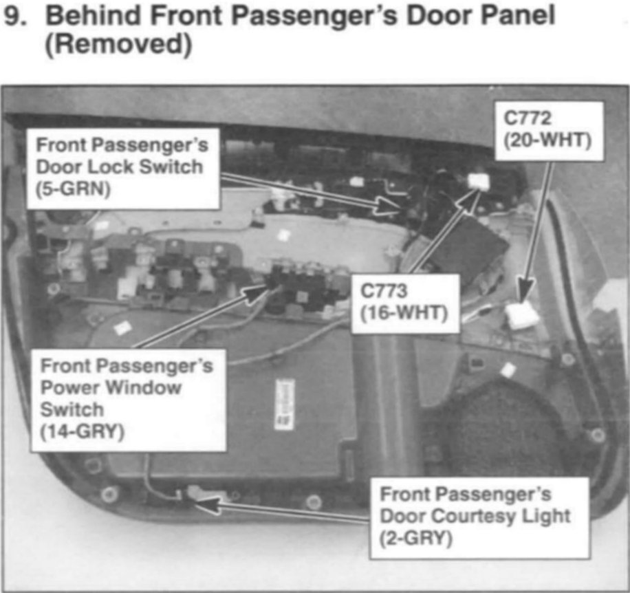

Operation CHARM
: Car repair manuals for everyone.
Home
>>
Acura
>>
2007
>>
MDX V6-3.7L
>>
Repair and Diagnosis
>>
Locations
>>
Component Locations
>>
Locations By Photo Number
>>
Location Photos 1-25
>>
9. Behind Front Passenger's Door Panel (Removed)
9. Behind Front Passenger's Door Panel (Removed)
